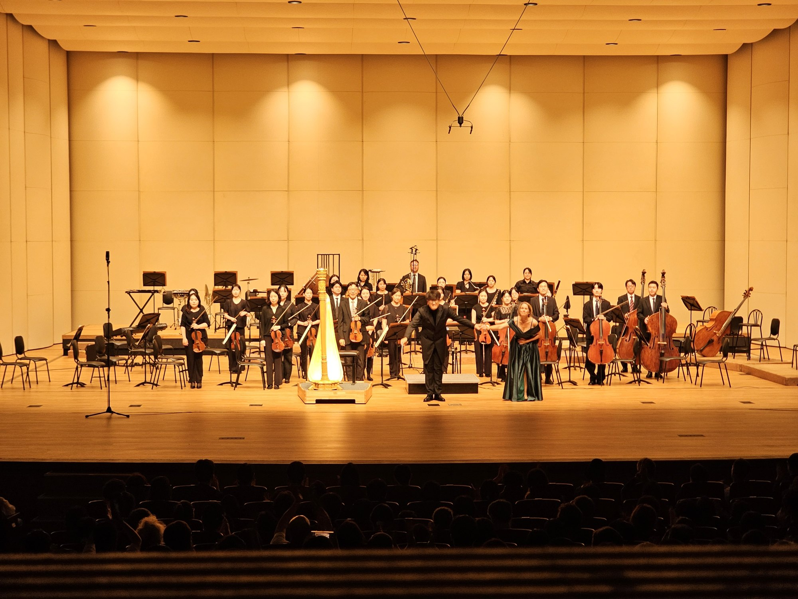
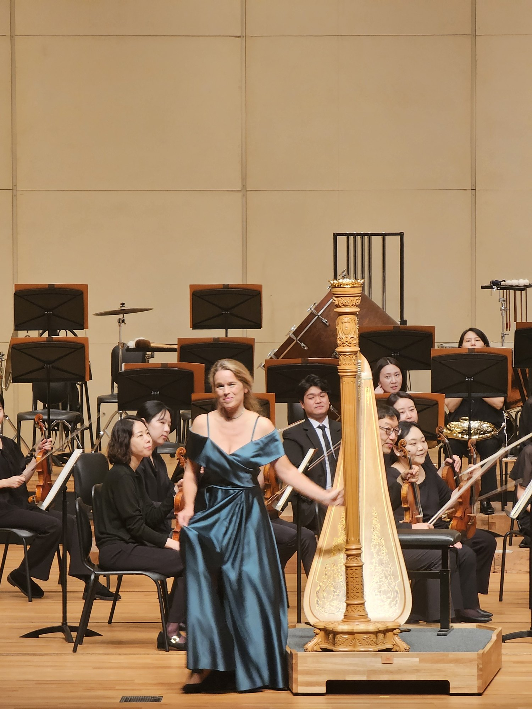
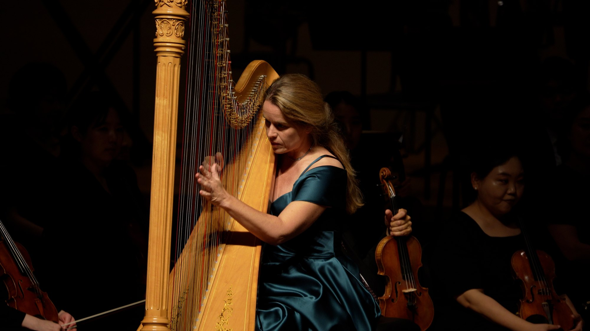

The Gunpo Prime Philharmonic Orchestra presented its 133rd subscription concert, Boheoja Resounds, on July 18 at Suri Hall of the Gunpo Arts Center. Conducted by Hanhun Song, the programme brought together distinctly different musical worlds, beginning with the world premiere of composer Woojung Choi's Boheoja Resounds, followed by François-Adrien Boieldieu's Harp Concerto featuring Mirjam Schröder, and concluding with Tchaikovsky's Symphony No. 4.

Following the premiere of Choi's Boheoja Resounds, the focus shifted to harpist Mirjam Schröder. Schröder made her concert debut at the age of 15 in Mozart's Concerto for Flute and Harp and went on to receive numerous international distinctions, including third prize and the Audience Prize at the 2004 ARD International Music Competition. She taught at the University of Music Franz Liszt Weimar from 2006 to 2015 and has served as professor of harp at the University of Music and Performing Arts Vienna (mdW) since 2015. In Boieldieu's Harp Concerto, the instrument's transparent sonority and graceful melodic writing blended closely with the orchestra, shaping the character of the first half. The programme then expanded into the larger symphonic scale of Tchaikovsky's Symphony No. 4 in F minor, Op. 36, creating a striking progression from the harp's delicate colours to the dramatic force of a full symphony orchestra.
The concert was notable not only for introducing a new work by a contemporary Korean composer but also for placing that premiere alongside a major concerto and a large-scale symphonic masterpiece. By connecting Boheoja Resounds, Boieldieu's refined harp writing and the dramatic scope of Tchaikovsky, the programme created a meeting point between contemporary creation and established classical repertoire. The 133rd subscription concert consequently highlighted the Gunpo Prime Philharmonic's broad artistic range, bringing new music and familiar masterworks together within a single programme.

